专题03 绝对值化简的三种考法

考点01 利用数轴化简绝对值
考点02 分类讨论化简绝对值
考点03 利用几何意义化简绝对值

考点01 利用数轴化简绝对值
1．已知有理数a、b、c在数轴的对应位置如图，则 可化简为（ ）
可化简为（ ）
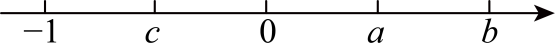
A． B．
B． C．
C． D．
D．
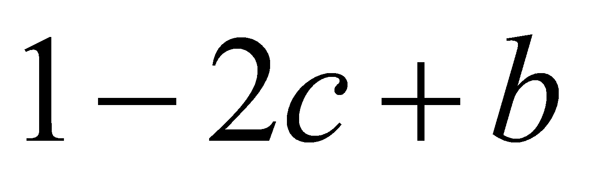
2．如图，点 在数轴上表示的数为
在数轴上表示的数为 ，且
，且 到
到 的距离和
的距离和 到
到 的距离相等；（1）
的距离相等；（1） ；（2）
；（2） ；（3）
；（3） ；（4）
；（4） ，其中正确的个数为（ ）
，其中正确的个数为（ ）
A．1个 B．2个 C．3个 D．4个
3．有理数 在数轴上的位置如图所示．
在数轴上的位置如图所示．

(1)判断， ______
______ ，
，
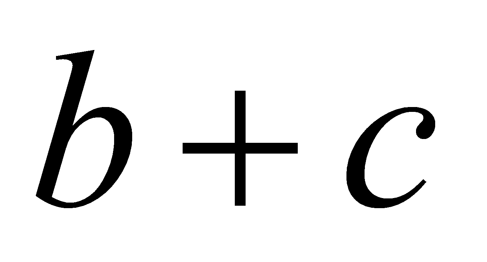
______， ______．
______．(2)化简
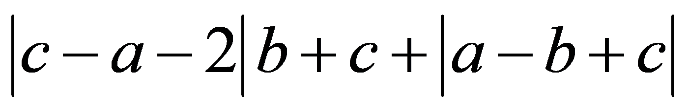
．4．已知a，b，c在数轴上的位置如图．

(1) ____0，____0，
____0，____0， ____0；（请用“
____0；（请用“ ”或“
”或“ ”填空）
”填空）
(2)化简：
5．有理数a，b，c在数轴上的位置如图所示．
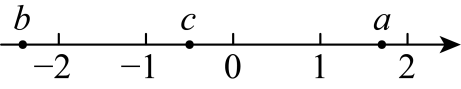
(1)用“>”“<”或“＝”填空：b 0， 0，
0，
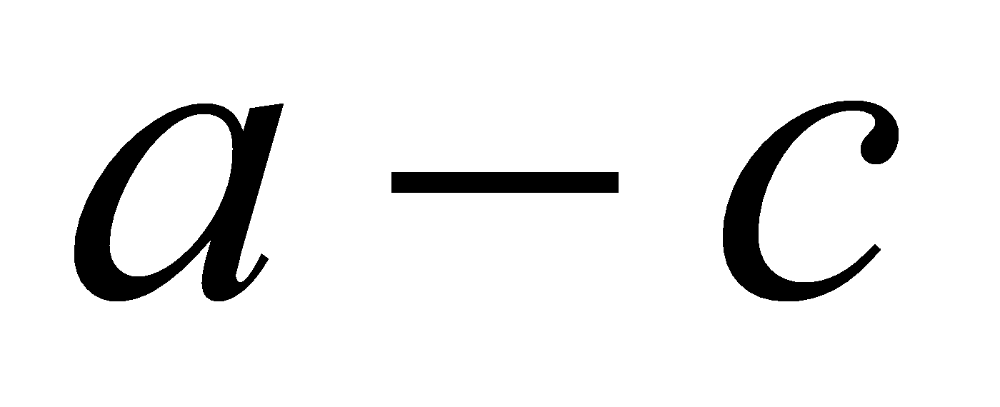
0， 0；(2) ；
；
(3)化简：
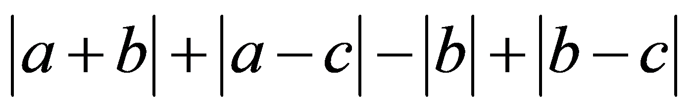
．6．我们知道， 是指数轴上表示数
是指数轴上表示数 的点到原点的距离．这是绝对值的几何意义．进一步地，如果数轴上点
的点到原点的距离．这是绝对值的几何意义．进一步地，如果数轴上点 分别对应数
分别对应数 ，那么两点间的距离为
，那么两点间的距离为 ．
．
(1)如图 ，点在数轴上对应的数为，点对应的数为
，点在数轴上对应的数为，点对应的数为 ，则_____，_____，
，则_____，_____，
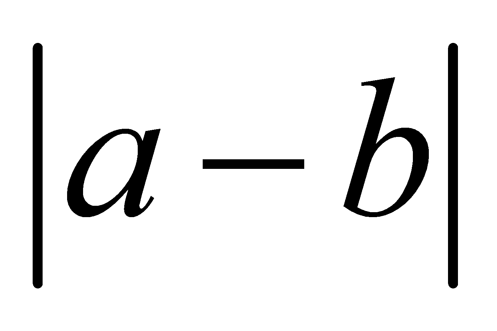
_____；(2)若
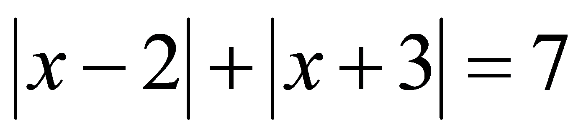
，则 _____；
_____；(3)已知 三个数在数轴上的位置如图
三个数在数轴上的位置如图 所示，化简：
所示，化简： ．
．
考点02 分类讨论化简绝对值
7．已知、、 都不等于零，且
都不等于零，且
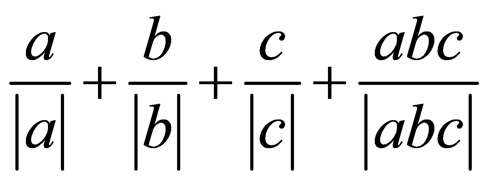
的最大值是 ，最小值是
，最小值是 ，则
，则 的值是（ ）
的值是（ ）A．4 B．8 C．12 D．16
8．若、、均为整数，且
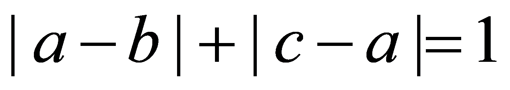
，则 的值为（ ）
的值为（ ）A．1 B．2 C．3 D．4
9．已知、、均为整数，且 ，
，
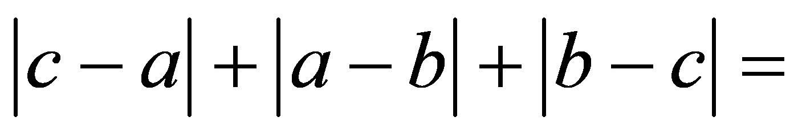
（ ）A．0 B．1 C．2 D．3
10．如果，且 ，那么
，那么 ．
．
11．若非零有理数m、n、p满足 ，则
，则 ．
．
12．已知 有四个不同的解，则
有四个不同的解，则 ．
．
13．若a、b、c是整数，且
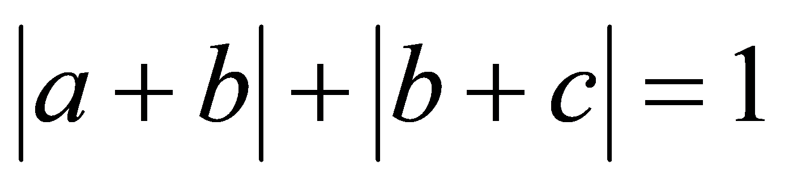
，则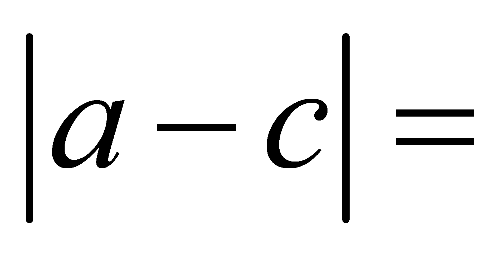
．14．已知整数
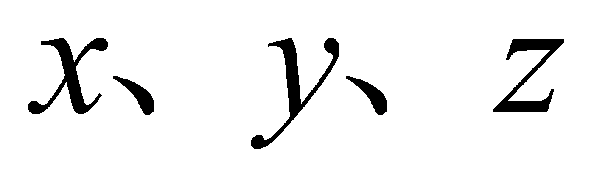
满足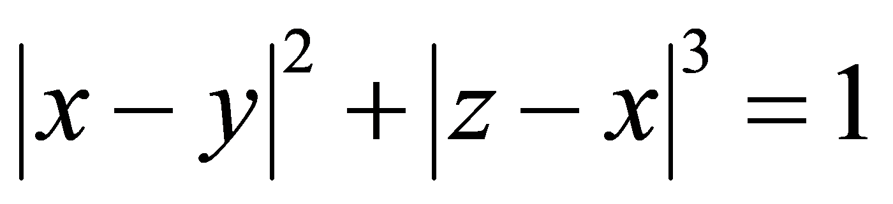
，则 的值为 ．
的值为 ．15．已知 是非零有理数，且
是非零有理数，且 ，求
，求 ．
．
考点03 利用几何意义化简绝对值
16．【阅读】若点，在数轴上分别表示有理数，，，两点之间的距离表示为，则
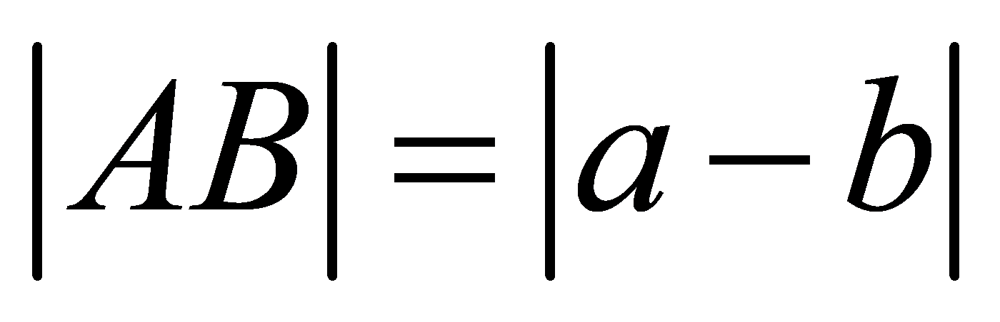
，即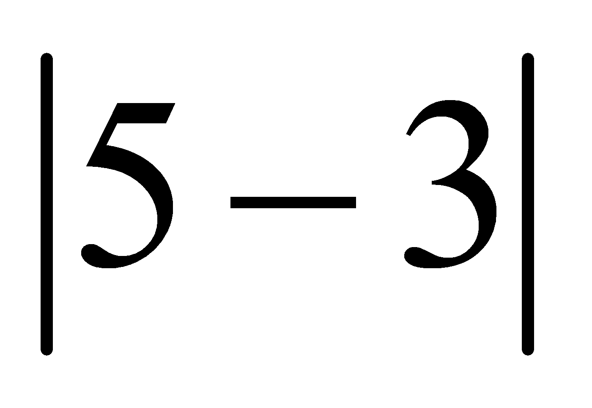
表示为5与3两数在数轴上所对应的两点之间的距离．（1）点，表示的数分别为 ，2，则
，2，则
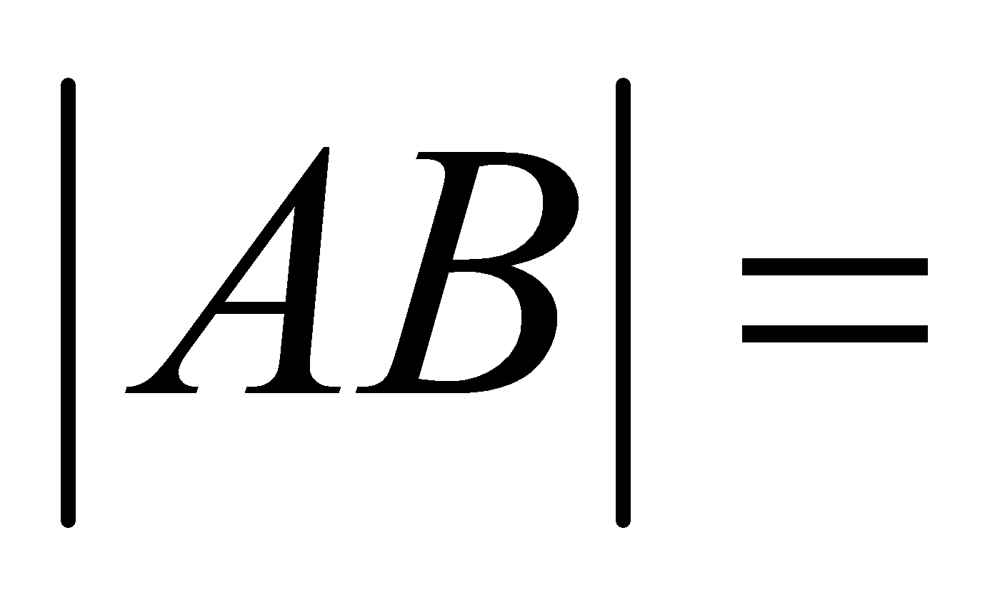
_______；（2）若 ，则_________；
，则_________；
【应用】
（3）如图，数轴上表示数的点，问 是否有最小值？如果有，直接写出最小值；如果没有，说明理由．
是否有最小值？如果有，直接写出最小值；如果没有，说明理由．
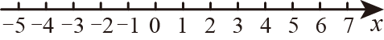
（4）由以上的探索猜想，对于任意有理数 ，
，
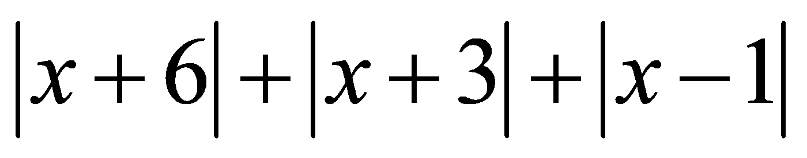
是否有最小值？如果有，直接写出最小值，并写出此时x的值；如果没有，说明理由．17．先阅读，结合数轴与绝对值的知识回答下列问题：
【阅读】：
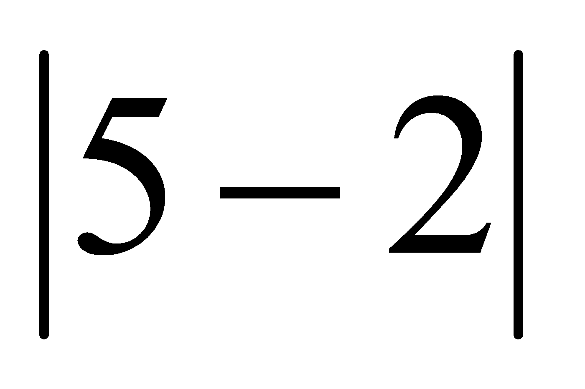
表示 与差的绝对值，也可理解为与两数在数轴上所对应的两点之间的距离；
与差的绝对值，也可理解为与两数在数轴上所对应的两点之间的距离；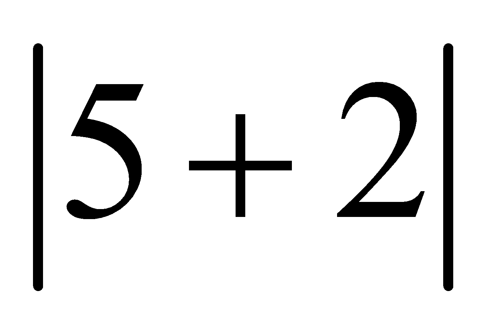
可以看作 ，表示与
，表示与 的差的绝对值，也可理解为与两数在数轴上所对应的两点之间的距离．
的差的绝对值，也可理解为与两数在数轴上所对应的两点之间的距离．【探索】：
(1)数轴上表示 和两点之间的距离是________；一般地、数轴上表示数和数的两点之间的距离等于
和两点之间的距离是________；一般地、数轴上表示数和数的两点之间的距离等于 ．如果表示数和
．如果表示数和 的两点之间的距离是
的两点之间的距离是 ，那么的值为________．
，那么的值为________．
(2)若
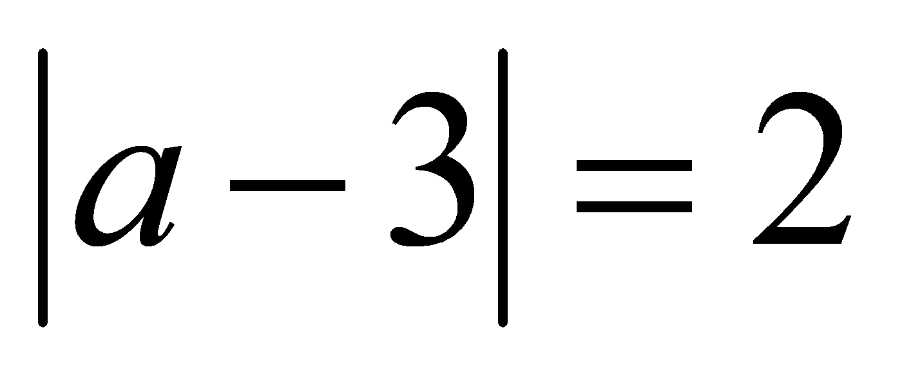
，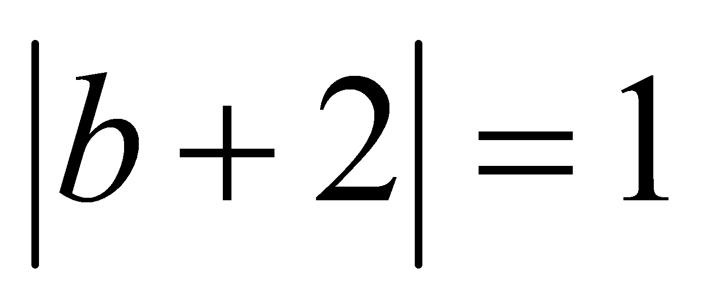
，且数、在数轴上表示的点分别是点、点，则、两点间的最大距离是________，最小距离是________；(3)利用数轴找出所有符合条件的整数点，使得
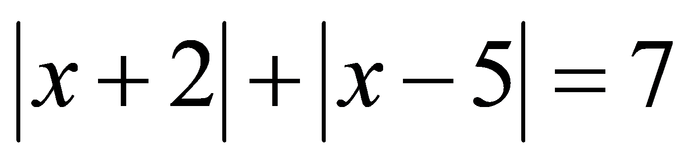
，这些点表示的数的和是________．(4)应用：小明妈妈要租房，使小明到学校与妈妈到上班地点距离和最小，若把租房地记作，妈妈上班地点记作，小明学校记作2，那么距离和
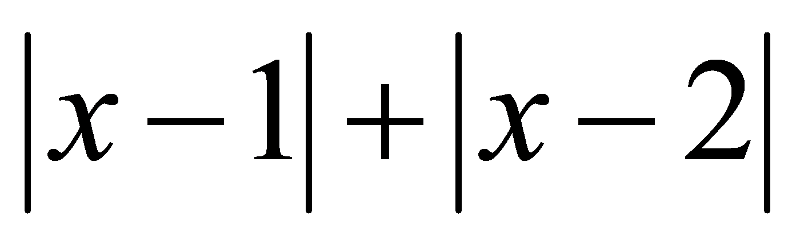
的最小值是：________．(5)拓展：
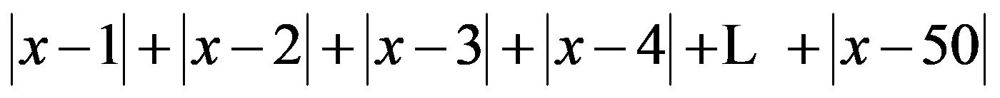
的最小值是：________．18．同学们，我们都知道：表示5与2的差的绝对值，实际上也可理解为5与2两数在数轴上所对应的两点之间的距离；表示5与的差的绝对值，实际上也可理解为5与两数在数轴上所对应的两点之间的距离，试探索：
(1) ______；
______； ______；
______；
(2)若数轴上表示数的点位于 与6之间，则
与6之间，则
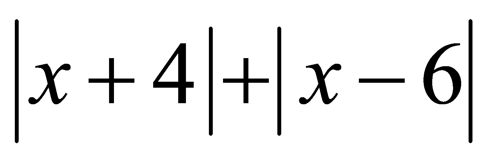
的值为______；(3)若 ，则的值是______；
，则的值是______；
(4) 的最小值是______，满足最小值时整数x的和是______．
的最小值是______，满足最小值时整数x的和是______．
19．【知识储备】点M、N在数轴上分别表示有理数m、n，则M、N两点之间的距离可表示为 ．
．
【初步运用】
（1）数轴上表示3与的两点之间的距离为______；
（2）已知数轴上某个点表示的数为．
①若 ，则______；
，则______；
②若
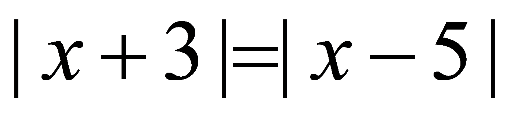
，则______；【深入探究】
（3）如图，数轴上每相邻两点之间的距离为1个单位长度，点A、B、C表示的数分别为a、b、c．
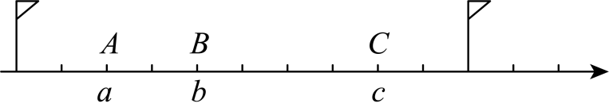
①
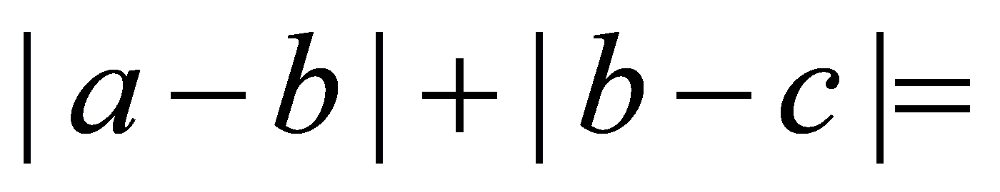
______；②若
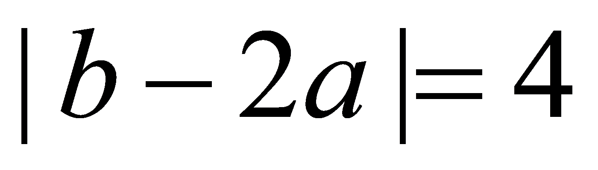
，则点表示的数为______；③若该数轴上另有两个点 、
、 ，它们分别表示有理数p、q，其中点在线段
，它们分别表示有理数p、q，其中点在线段 上，当
上，当 且
且 最小时，、两点之间的距离为______．
最小时，、两点之间的距离为______．
20．（1）探索材料1（填空）：
数轴上表示数m和数n的两点之间的距离等于 ．例如数轴上表示数2和5的两点距离为
．例如数轴上表示数2和5的两点距离为
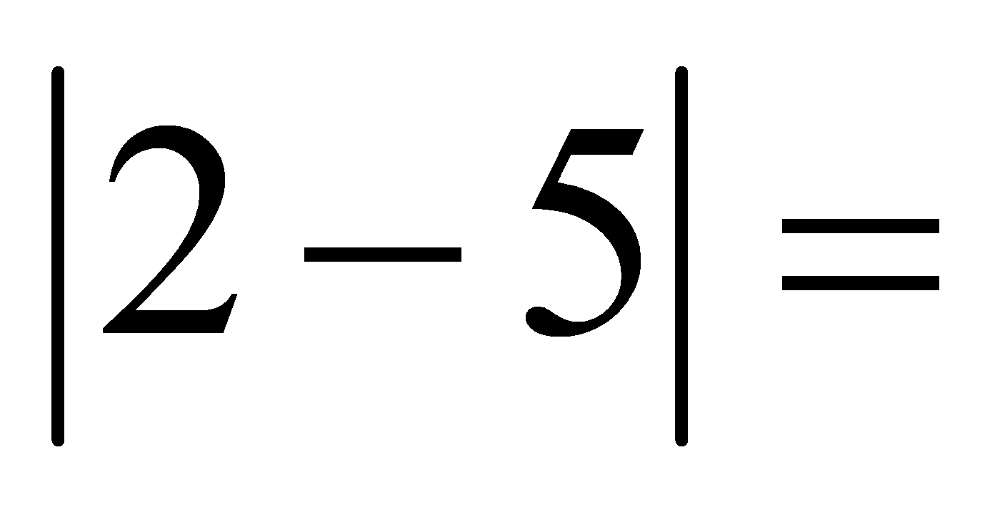
；数轴上表示数3和的两点距离为 ；
；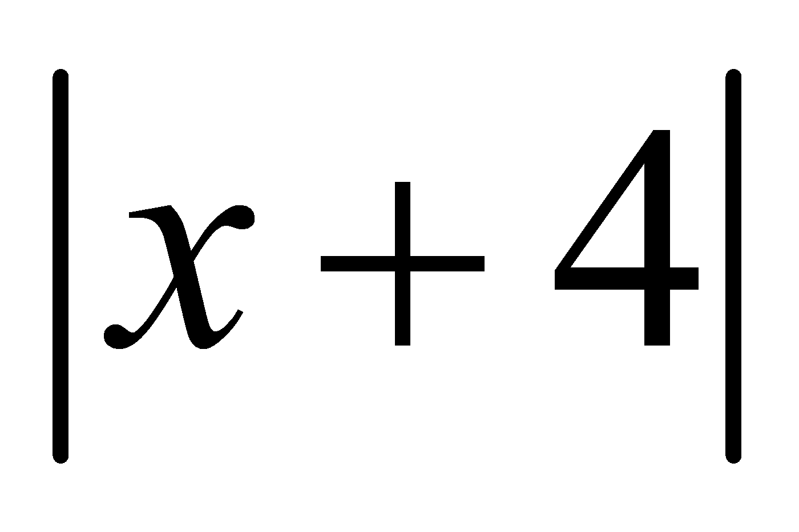
的意义可理解为数轴上表示数 和 这两点的距离；（2）探索材料2（填空）：
①如图1，在工厂的一条流水线上有两个加工点A和B，要在流水线上设一个材料供应点P往两个加工点输送材料，材料供应点P应设在才能使P到A的距离与P到B的距离之和最小？

②如图2，在工厂的一条流水线上有三个加工点A，B，C，要在流水线上设一个材料供应点P往三个加工点输送材料，材料供应点P应设在才能使P到A，B，C三点的距离之和最小？
③如图3，在工厂的一条流水线上有四个加工点A，B，C，D，要在流水线上设一个材料供应点P往四个加工点输送材料，材料供应点P应设在才能使P到A，B，C，D四点的距离之和最小？

（3）结论应用（填空）：
①代数式 的最小值是______，此时x的范围是_______；
的最小值是______，此时x的范围是_______；
②代数式 的最小值是_______，此时x的值为______；
的最小值是_______，此时x的值为______；
③代数式 的最小值是______，此时x的范围是______．
的最小值是______，此时x的范围是______．
21．结合数轴与绝对值的知识回答下列问题：
(1)表示和两点之间的距离是___________；一般地，数轴上表示数和数的两点之间的距离等于
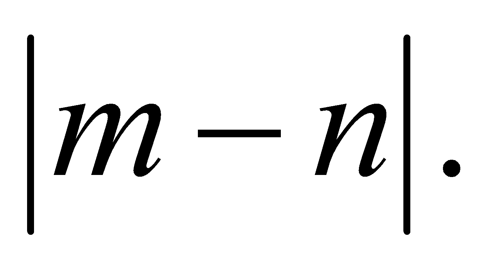
如果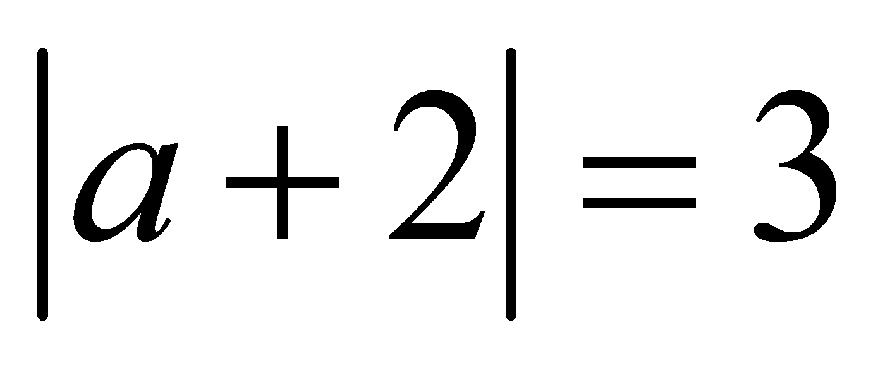
，那么 ________．
________．(2)若数轴上表示数的点位于与之间，则
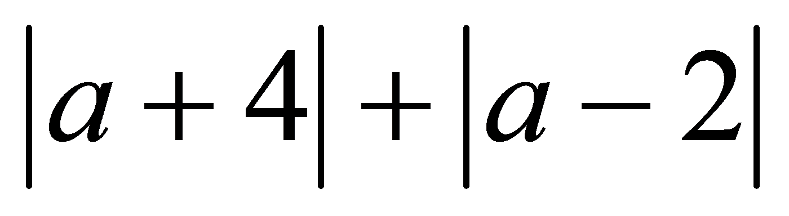
的值为_________；(3)若 ，求
，求
(4)求 的最小值．
的最小值．
22．阅读与运用：若点A、B在数轴上分别表示有理数a、b，则A、B两点间的距离表示为．如数轴上表示4和-1的两点之间的距离是 ，利用上述结论，回答以下问题：如图，在数轴上A、B两点对应的数分别为
，利用上述结论，回答以下问题：如图，在数轴上A、B两点对应的数分别为 、20，数轴上有一动点P．
、20，数轴上有一动点P．
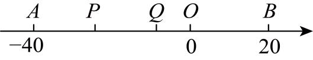
(1)若点P在A、B两点之间，则点P到A、B两点的距离的和为___________．
(2)如图，设点P对应的数为x，数轴上一点Q在点P的右侧，且与点P始终保持相距18个单位长度，当x取何值时，点A与点P的距离、点B与点Q的距离的和为48？
(3)结合对前面问题的思考，若 ，求
，求 的最大值．
的最大值．
23．小红和小明在研究绝对值的问题时，碰到了下面的问题：
“当式子 取最小值时，相应的的取值范围是______，最小值是______”．
取最小值时，相应的的取值范围是______，最小值是______”．
小红说：“如果去掉绝对值问题就变得简单了，把数轴分为三段：
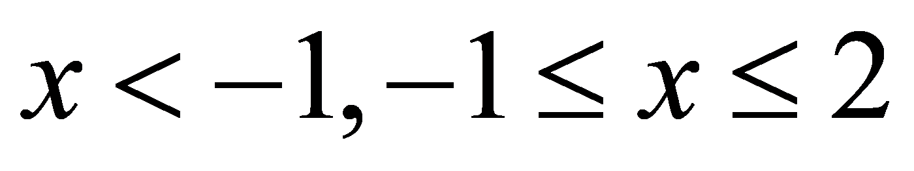
和 ，经研究发现，当
，经研究发现，当 时，值最小为”．
时，值最小为”．小明说：“利用数形结合思想可以解决这个问题，若点、在数轴上分别表示有理数、，、两点之间的距离表示为 ，则在数轴上、两点之间的距离．”
，则在数轴上、两点之间的距离．”
请你根据他们的解题解决下面的问题：
(1)当式子 取最小值时，相应的的取值范围是______，最小值是______．
取最小值时，相应的的取值范围是______，最小值是______．
(2)已知 ，求
，求 的最大值和最小值及相应的的取值范围，并写出解答过程．
的最大值和最小值及相应的的取值范围，并写出解答过程．
(3)求为何值时，式子 有最小值，并求出此最小值．
有最小值，并求出此最小值．
24．在数学问题中，我们常用几何方法解决代数问题，借助数形结合的方法使复杂问题简单化．
材料一：我们知道 的几何意义是：数轴上表示数a的点到原点的距离；
的几何意义是：数轴上表示数a的点到原点的距离； 的几何意义是：数轴上表示数a，b的两点之间的距离；
的几何意义是：数轴上表示数a，b的两点之间的距离； 的几何意义是：数轴上表示数a，
的几何意义是：数轴上表示数a， 的两点之间的距离；根据绝对值的几何意义，我们可以求出以下方程的解．
的两点之间的距离；根据绝对值的几何意义，我们可以求出以下方程的解．
（1）
解：由绝对值的几何意义知：在数轴上x表示的点到3的距离等于4，
∴ ，
， ；
；
（2）
解：∵ ，
，
∴其绝对值的几何意义为：在数轴上x表示的点到的距离等于5．
∴ ，
， ．
．
材料二：如何求 的最小值．
的最小值．
由的几何意义是数轴上表示数x的点到表示数1和两点的距离的和，要使和最小，则表示数x的这点必在和1之间（包括这两个端点）取值．
∴的最小值是3；由此可求解方程 ，把数轴上表示x的点记为点P，由绝对值的几何意义知：当
，把数轴上表示x的点记为点P，由绝对值的几何意义知：当 时，恒有最小值3，所以要使成立，则点P必在的左边或1的右边，且到表示数或1的点的距离均为0.5个单位．
时，恒有最小值3，所以要使成立，则点P必在的左边或1的右边，且到表示数或1的点的距离均为0.5个单位．
故方程的解为： ，
，
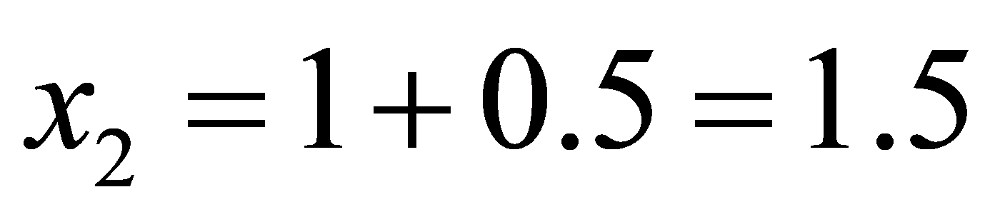
．阅读以上材料，解决以下问题：
（1）填空： 的最小值为_______；
的最小值为_______；
（2）已知有理数x满足： ，有理数y使得
，有理数y使得 的值最小，求
的值最小，求 的值．
的值．
（3）试找到符合条件的x，使 的值最小，并求出此时的最小值及x的取值范围．
的值最小，并求出此时的最小值及x的取值范围．